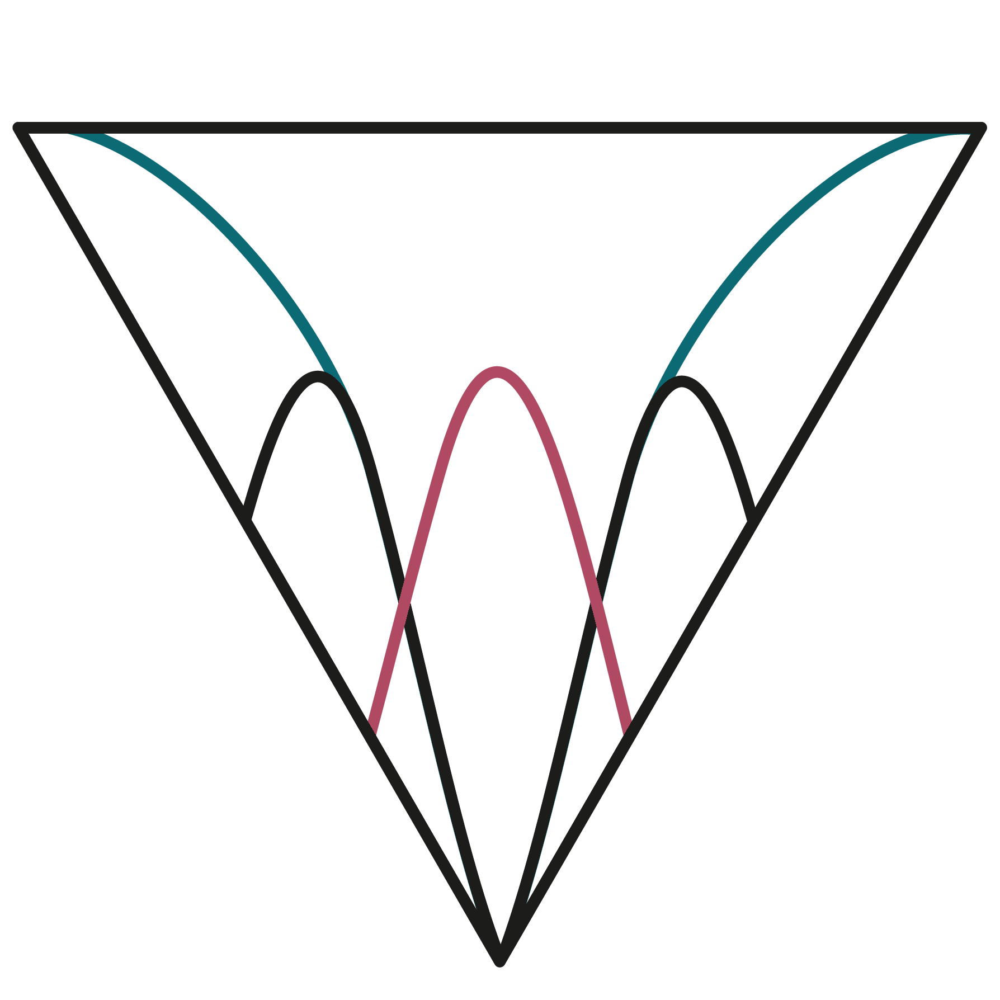

Comparing the use of supervised machine learning variable selection methods in the context of two-group classification in the psychological and health sciences
Assistant Professor · Department of Psychology · California State University, Northridge
I develop and evaluate methods for psychological classification and measurement, combining psychometric theory with machine learning. My work asks how these methods behave under the conditions researchers actually face: item bias, missing data, and scales that are still being built.
Psychological assessment drives decisions in healthcare, education, and public policy. These decisions depend on classifying individuals, that is, placing people into categories, yet the methods we use for classification often struggle with fairness, accuracy, and interpretability. My research addresses these problems by integrating machine learning with psychometric theory. It centers on two connected lines of work: (1) methodological research that develops and evaluates tools for classification and variable selection under complex conditions such as differential item functioning (DIF) and missing data, and (2) applied psychometrics that puts those tools to work on real measurement problems.
I work with item response theory, factor analysis, and supervised machine learning for classification and variable selection. Much of my methodological work uses large simulation studies to test how classifiers behave under difficult conditions, including unmodeled DIF and incomplete data.
I earned my Ph.D. in quantitative psychology, with a minor in cognitive psychology and neuroscience, from the University of Oklahoma in 2026, after an M.S. from Oklahoma in 2022 and a B.S. in psychology and criminology from Butler University in 2020.
Interests: psychometrics, machine learning, classification, differential item functioning, replication, and misophonia.
“Comparing Supervised Machine Learning Variable Selection Methods” published in Frontiers in Psychology. Read it
Began as Assistant Professor of Quantitative Psychology at CSU Northridge.
Presented work on factor-analytic replication and on classification with unmodeled DIF at Modern Modeling Methods (Fordham University, NY).
Received the Provost's Graduate Teaching Assistant Award, University of Oklahoma.
“When DIF Goes Unmodeled” published in the Journal of Behavioral Data Science. Read it
Psychometric evaluation of the Duke Misophonia Questionnaire published in the Journal of Clinical Psychology. Read it
Comparing the use of supervised machine learning variable selection methods in the context of two-group classification in the psychological and health sciences
When DIF goes unmodeled: assessing the viability of random forest for diagnostic classification
Selective disruption of salience-network anterior insula connectivity in misophonia: a disorder-specific neural signature
A psychometric evaluation of the Duke Misophonia Questionnaire
A research program on the methods that make psychological classification trustworthy, from psychometrics to machine learning.

Provost's Graduate Teaching Assistant Award · Graduate College, University of Oklahoma
Chuck Gettys Award for Outstanding Research in Graduate School · Department of Psychology
Helen Riddle Award for Teaching Excellence · Department of Psychology
Outstanding Graduate Student Teaching Award · Graduate Student Senate
Top 100 Most Outstanding Students · Butler University
C. Wright Mills Award · Department of Sociology and Criminology, Butler University